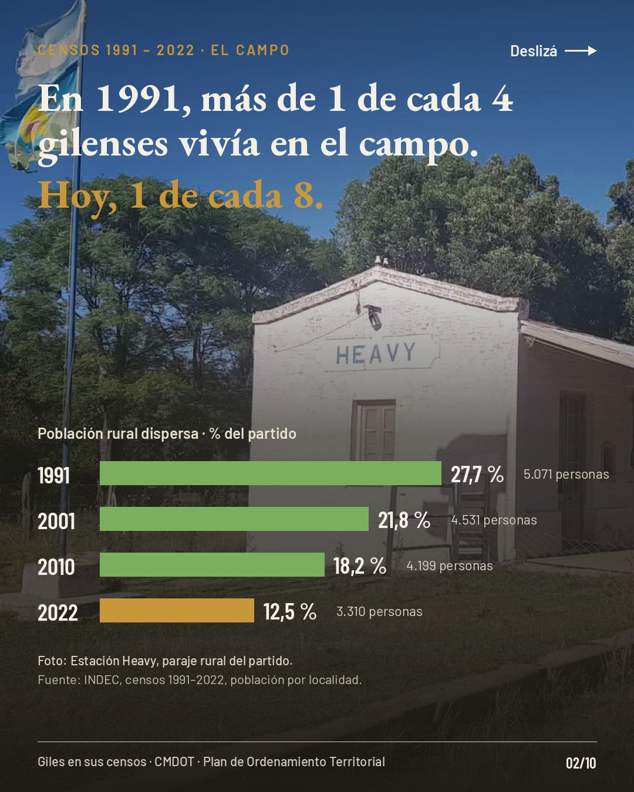
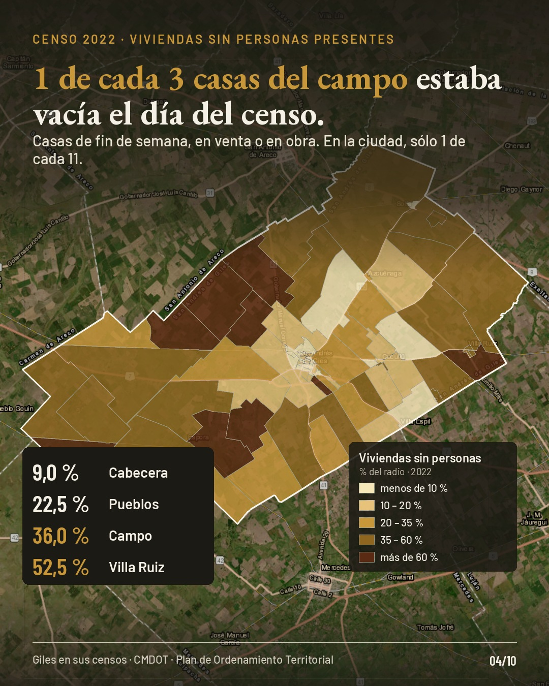
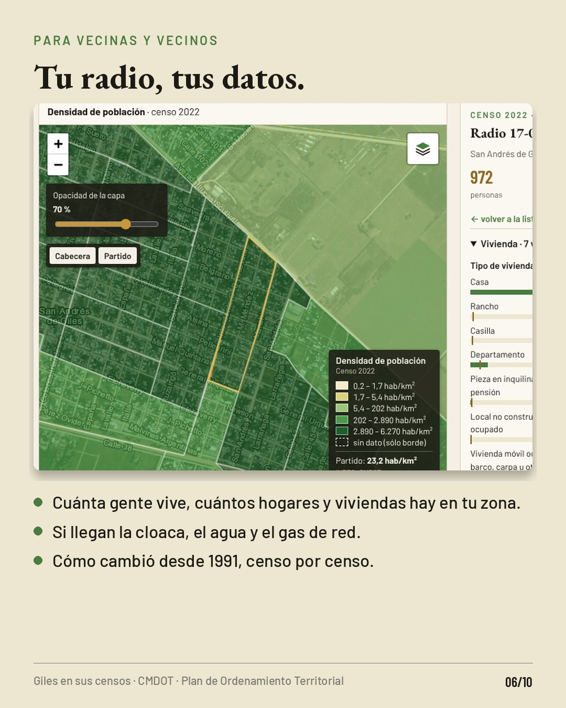
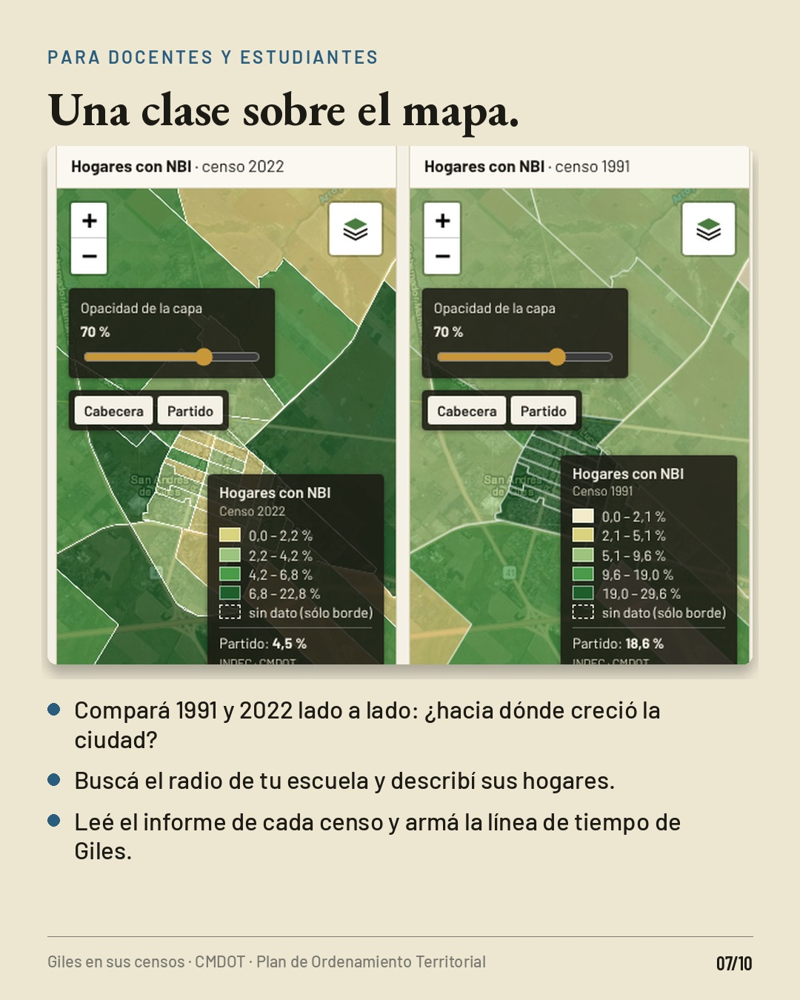
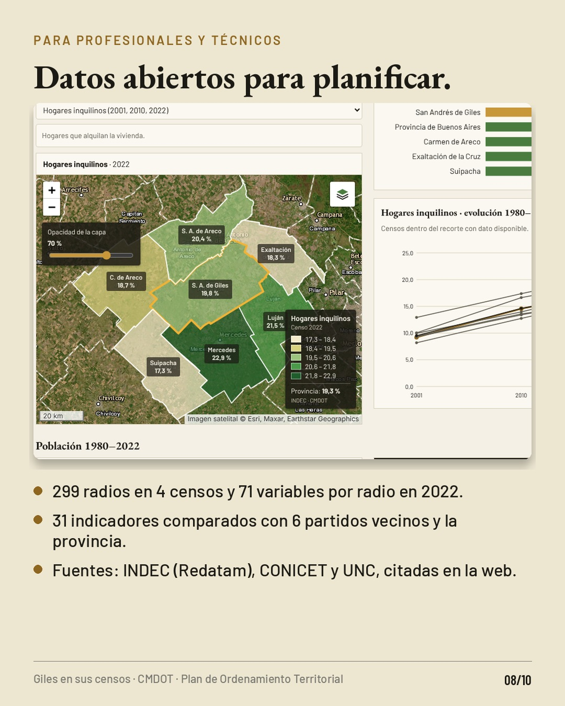
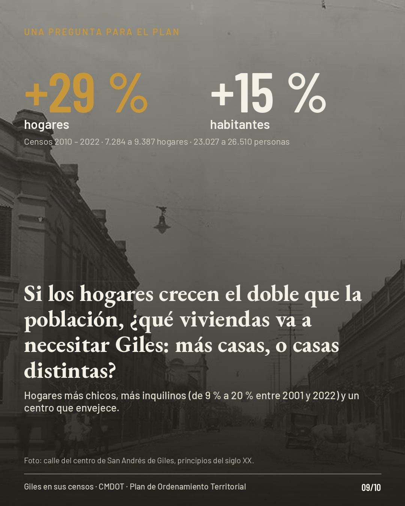
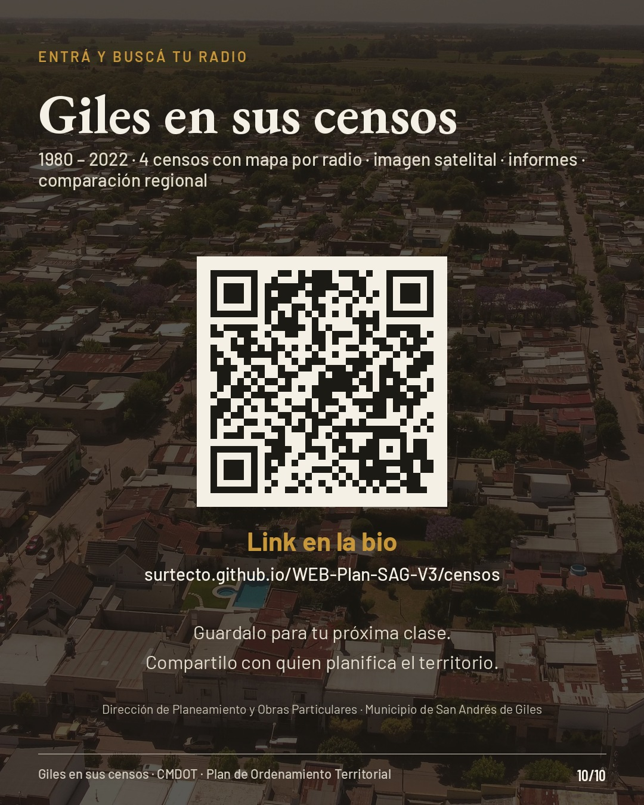

Posteo para Instagram
Carrusel de 10 piezas en formato 4:5 (1080 × 1350): 7 imágenes y 3 videos. Deslizá para verlas en orden; cada pieza se descarga por separado y trae su texto alternativo para cargarlo en Instagram.
01
Portada · video 9 s Texto alternativo: Vista aérea de San Andrés de Giles que se funde con la imagen satelital del partido y sus radios censales de 2022. Texto: ¿Dónde vive Giles? 42 años de censos, radio por radio.
Descargar video 02

El campo se vació Texto alternativo: Estación Heavy. En 1991, más de 1 de cada 4 gilenses vivía en el campo; hoy, 1 de cada 8. Barras: 27,7 % en 1991, 21,8 % en 2001, 18,2 % en 2010 y 12,5 % en 2022.
Descargar imagen 03
Así se fue llenando la ciudad · video 12 s Texto alternativo: Mapa de densidad por radio de la ciudad cabecera sobre imagen satelital en 1991, 2001, 2010 y 2022. La cabecera pasa del 62 % al 73,3 % de la población.
Descargar video 04

Casas sin gente Texto alternativo: Mapa del partido con el porcentaje de viviendas sin personas presentes por radio en 2022: cabecera 9 %, pueblos 22,5 %, campo 36 %, Villa Ruiz 52,5 %.
Descargar imagen 05
Cómo usar la web · video 21 s Texto alternativo: Grabación de la web: elegir el censo en la línea de tiempo, buscar un radio, leer la ficha y regular la opacidad del mapa.
Descargar video 06

Para vecinas y vecinos Texto alternativo: Captura de la ficha de un radio con su mapa: personas, hogares, viviendas y servicios.
Descargar imagen 07

Para docentes y estudiantes Texto alternativo: Captura de la comparación 2022 y 1991 lado a lado, con tres consignas para clase.
Descargar imagen 08

Para profesionales Texto alternativo: Captura de la comparación regional con los partidos vecinos; datos y fuentes.
Descargar imagen 09

Una pregunta para el Plan Texto alternativo: Foto antigua de una calle del centro. Hogares +29 %, habitantes +15 % entre 2010 y 2022. ¿Qué viviendas va a necesitar Giles?
Descargar imagen 10

Entrá y buscá tu radio Texto alternativo: Código QR y enlace a la web Giles en sus censos.
Descargar imagen Texto del posteo
Copiar texto
¿Dónde vive Giles? 42 años de censos, radio por radio, ahora en un mapa abierto 🗺️
En 1991, más de 1 de cada 4 gilenses vivía en el campo. Hoy, 1 de cada 8. La ciudad cabecera pasó del 62 % al 73 % de la población, y en 2022 una de cada tres casas del campo estaba vacía el día del censo.
Lo armamos en «Giles en sus censos», una web pública con los censos nacionales de 1980 a 2022:
▪ 299 radios censales de 1991, 2001, 2010 y 2022 sobre la imagen satelital
▪ La ficha de cada radio: personas, hogares, viviendas, agua, cloaca, gas, tenencia
▪ Un informe por censo y la comparación con los partidos vecinos
👥 Vecinas y vecinos: buscá tu radio y mirá cómo cambió tu zona.
📚 Docentes y estudiantes: compará 1991 y 2022 lado a lado y armá la línea de tiempo de Giles.
📐 Profesionales: 71 variables por radio y 31 indicadores regionales, con sus fuentes.
Y una pregunta que deja el último censo: entre 2010 y 2022 los hogares crecieron un 29 % y la población un 15 %. ¿Qué viviendas va a necesitar Giles: más casas, o casas distintas? Te leemos en los comentarios.
🔗 Link en la bio · surtecto.github.io/WEB-Plan-SAG-V3/censos
Guardá este posteo para tu próxima clase y compartilo con quien planifica el territorio.
Fuentes: INDEC (Redatam), CONICET y UNC. Imagen satelital © Esri.
Dirección de Planeamiento y Obras Particulares · CMDOT · Plan de Ordenamiento Territorial 2020/2030
#SanAndrésDeGiles #Giles #CensoNacional #Censo2022 #INDEC #PlanDeOrdenamientoTerritorial #PlanificaciónTerritorial #Urbanismo #Geografía #DatosAbiertos #MapasAbiertos #RadiosCensales #ProvinciaDeBuenosAires #Pampa #Educación
Cómo publicarlo
Subí las 10 piezas en el orden numerado como un solo posteo (carrusel). Instagram acepta imágenes y videos mezclados.
Elegí 4:5 al recortar para que no se corten los textos.
Cargá el texto alternativo de cada pieza en «Configuración avanzada → Accesibilidad».
Poné el enlace de la web en la bio antes de publicar: surtecto.github.io/WEB-Plan-SAG-V3/censos
Para Historias, la pieza 03 (mapa en el tiempo) funciona sola con un sticker de enlace.